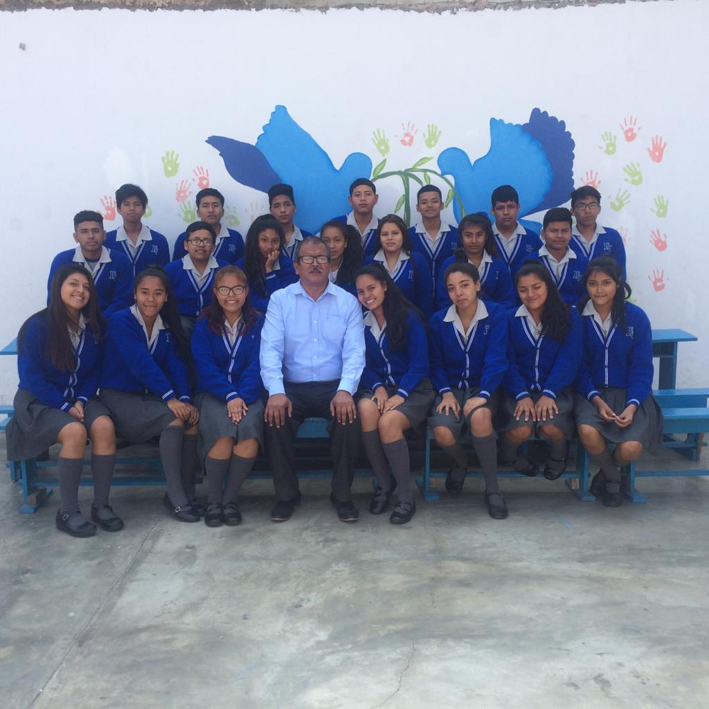

Nuestro Proceso de Admisión
Bienvenidos a nuestro PROCESO DE ADMISIÓN, nos esforzaremos para atenderte como mereces. Te guiaremos en este proceso y te brindaremos toda la información que requieres.

Bienvenidos a nuestro PROCESO DE ADMISIÓN, nos esforzaremos para atenderte como mereces. Te guiaremos en este proceso y te brindaremos toda la información que requieres.
Nuestra Institución Educativa propone una educación que responda a los desafíos de un contexto en constante cambio. De ahí que nuestra propuesta curricular considere que los aprendizajes deben ser contextualizados y contribuir a la comprensión profunda del mundo y de uno mismo.
Nuestros estudiantes logran el desarrollo progresivo de sus capacidades con base en técnicas de innovación permanente. Potenciamos el talento de una manera integral y desarrollamos competencias para que se desenvuelvan en entornos virtuales generados por las nuevas tecnologías.
En este nivel contamos con un programa cimentado en nuestro Sistema Helicoidal, el cual sostiene que todo ser humano es capaz de interiorizar nuevos conocimientos, habilidades y destrezas, partiendo desde lo más simple hasta lo más complejo, de manera progresiva y en forma continua.